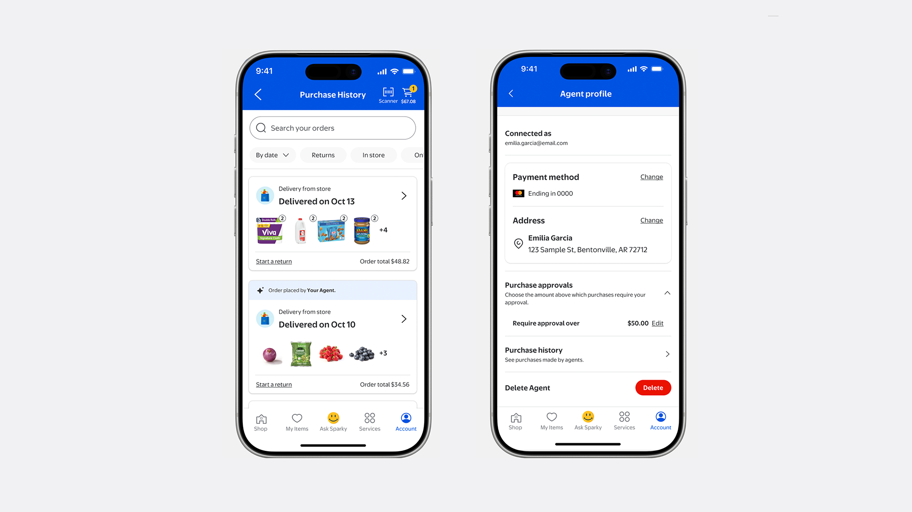
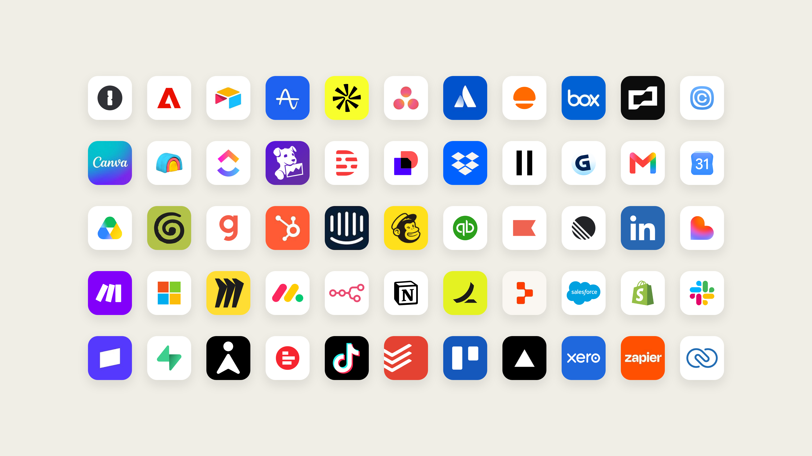
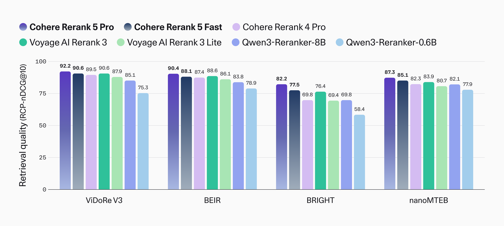
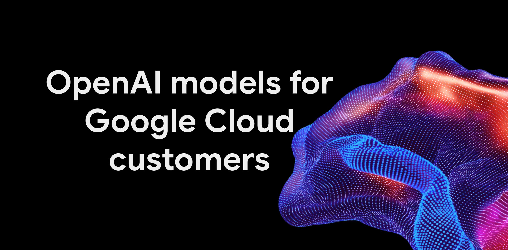

AI NEWS ISSUE 24
Walmart, 에이전트별 구매 권한과 한도 도입 예고
대신 쇼핑하고, 맥락을 유지하며 업무를 이어가는 에이전트가 등장합니다. Walmart의 구매 통제, Claude Duet의 개인 업무 지원, Cohere의 검색 최적화, OpenAI의 클라우드 협력과 내부 사고를 통해 일을 맡길 때 필요한 조건을 살펴봅니다.
자료 확인 기준은 한국시간 2026년 10월 22일입니다. 제품·협력 발표는 원문 날짜 10월 21일, 내부 사고는 10월 20일 공개 보고서를 기준으로 읽었습니다. 기능과 수치는 발표사의 설명이며, 직접 사용하거나 성능을 재측정한 결과는 아닙니다.
01 / WALMART · AGENT GATEWAY & PROFILES
누가 샀는지 구분하고,
어디까지 살 수 있는지 정합니다
Walmart가 외부 에이전트의 쇼핑을 위한 Agent Gateway와 Agent Profiles를 발표했습니다. Walmart와 Sam’s Club에서 고객을 대신해 쇼핑하도록 연결하되, 에이전트별 이력과 권한을 구분하겠다는 구상입니다. Gateway는 기업·개발자 대상 베타로 시작하며, 프로필은 발표 다음 달인 11월 출시 예정입니다. Walmart 발표 ↗
공식 소개 이미지 · WALMART · 10월 21일
고객이 보는 구매 이력과 에이전트 설정

Gateway는 사람용 화면의 버튼을 찾아 누르는 방식 대신, 외부 도구와 정보를 연결하는 규약인 MCP(Model Context Protocol)를 이용합니다. 연결 규약과 구매 권한은 서로 다른 역할입니다. 도구를 호출할 수 있어도, 어떤 주문을 허용할지는 거래 시스템이 판단해야 합니다. MCP 공식 설명 ↗
발표된 이용 흐름 · 설명용 도식
에이전트의 연결과 고객의 허락을 나눕니다
발표된 규칙에 따르면 에이전트는 고객의 카드 정보를 받지 않으며 결제수단을 추가하거나 바꿀 수 없습니다. 필요한 정보만 고객이 허용한 범위에서 접근하고, 규칙을 어기면 차단됩니다. 에이전트가 의도대로 행동하지 않은 경우에도 Walmart의 반품 절차가 적용된다고 설명합니다.
상품을 고르는 능력과 돈을 쓸 권한은 따로 설계해야 합니다.
예를 들어 소모품을 추천하도록 맡기는 것과 회사 카드를 바꾸도록 허용하는 것은 전혀 다른 위임입니다. 고객 계정 전체를 공유하기보다, 실행 주체·허용 행동·승인 이력을 구분하는 편이 문제를 추적하기 쉽습니다.
또한 접근 권한 철회와 이미 접수된 주문의 취소는 별도 처리 문제입니다. 이번 발표문만으로 프로필 삭제가 기존 주문까지 자동 취소한다고 볼 수는 없습니다.
02 / ANTHROPIC · CLAUDE DUET
맥락을 유지하며,
자리를 비워도 일을 이어갑니다
Anthropic이 연구 프리뷰로 공개한 Claude Duet은 사용자의 맥락을 유지하며 맡긴 일을 이어가는 개인 업무 에이전트입니다. OpenAI Dots처럼 자체 클라우드 컴퓨터와 브라우저, 연결된 앱을 활용해 사용자가 자리를 비운 동안에도 작업을 계속합니다. 두 제품의 공통된 사용 방식을 비교한 것이며, 세부 기능과 승인 규칙은 서로 다릅니다. Anthropic 발표 ↗ OpenAI Dots 발표 ↗
Duet은 Claude 계정의 메모리·스킬·연결 앱을 이어받아 하나의 대화에서 맥락을 유지합니다. 짧은 부탁부터 며칠에 걸친 프로젝트까지 다루며, 문자나 음성으로 후속 요청을 보낼 수 있습니다. 사용자의 컴퓨터나 휴대전화가 꺼져 있어도 자체 클라우드 환경에서 작업을 이어갑니다. 완료되거나 검토가 필요할 때 알리고, 연결된 앱에서 주의가 필요한 일을 먼저 찾아 알려주기도 합니다. Dots가 익숙하지 않다면 맥락을 이어가며 일을 맡기는 Dots 가이드도 함께 볼 수 있습니다.
| 비교 항목 | Claude Duet | OpenAI Dots |
|---|---|---|
| 공통 기반 | 맥락과 연결된 앱을 활용하고, 자체 클라우드 컴퓨터·브라우저에서 맡긴 일을 이어갑니다. | |
| 기억하는 맥락 | Claude 계정의 메모리·스킬·연결 앱을 이어받아 기존 맥락을 활용 | 대화와 피드백을 통해 사용자의 선호·판단 방식·좋은 결과물의 기준을 파악 |
| 이전 일 이어가기 | 하나의 문자·음성 대화에 후속 요청을 보태며 장기 작업을 계속. 완료·검토 시 알림 | ChatGPT에서 시작한 일을 Slack·Teams에서도 같은 맥락으로 이어가며 여러 프로젝트를 병행 |
| 대화 채널 | 별도 Duet 앱(iOS·Android), claude.ai | ChatGPT, Slack, Teams |
| 컴퓨터 접근 | 자체 클라우드에서 실행. 현재 브라우저 화면 직접 보기는 미지원 | 자체 컴퓨터 화면 확인 가능. 권한을 주면 내 PC도 연결 |
| 실행 승인 | 메시지 전송·결제·서명·삭제 전에 승인 대기 | 사용자 지시·맞춤 규칙·기본 안전 요건에 따라 실행·승인·직접 수행을 구분 |
같은 업무로 비교 · 가상 예시
어제 만든 회의 자료를 고쳐 고객에게 보낸다면
월요일에는 “금요일 고객 회의 자료를 한 장으로, 비용부터 정리해줘”라고 맡깁니다. 화요일에는 새 견적을 주며 “어제 자료에 이것도 반영해줘”라고 덧붙입니다. 수정본을 확인한 뒤에는 수신자를 지정해 “이 자료를 고객 담당자에게 이메일로 보내줘”라고 요청합니다.
Opus 5.5를 기반으로 아침 요약, 회의 일정 조율, 보고서·대시보드 작성 등을 돕는다고 소개합니다. 미국의 Pro·Max 구독자 중 대기자 명단을 통해 접근 권한을 받은 사용자가 대상입니다. Team·Enterprise는 아직 포함되지 않습니다. 한국에서 바로 이용할 수 있다는 발표는 아닙니다. Claude Duet 제품 안내 ↗
공식 연결 앱 안내 · ANTHROPIC
업무를 이어가기 위해 연결하는 도구들

| 읽기·준비 | 실행 전 승인 |
|---|---|
| 정보 확인, 답장 초안, 업무 자료 준비 | 메시지 전송, 결제, 문서 서명, 데이터 삭제 |
연결 계정은 몇 시간 간격으로 확인합니다. 지속적인 실시간 감시와는 다르며, 확인 사이에 들어온 급한 일을 놓치거나 중요도를 잘못 판단할 수 있습니다. 백그라운드 확인과 큰 작업도 기존 구독의 사용 한도에 포함됩니다.
Anthropic은 민감정보 유출을 막기 위한 검사와 외부 침투 테스트도 설명했습니다. 이는 공급사가 마련한 보호 조치에 관한 발표입니다. 실제 업무에서 실수나 정보 유출을 모두 막는다는 독립 검증은 아닙니다.
우리 업무에서는 앞서 정한 조건을 다음 작업에도 반영하는지, 달라진 상황을 알려주고 후속 작업을 이어가는지를 살펴볼 수 있습니다. 모임에서는 위 예시처럼 자료 수정과 발송을 나누어 맡기고, 각 단계에서 어떤 확인을 요청하는지 비교해 볼 수 있습니다.
03 / COHERE · RERANK 5
많이 읽게 하기 전에,
필요한 근거부터 고릅니다
Cohere가 Rerank 5 Pro와 Fast를 출시했습니다. Rerank는 검색으로 찾은 후보를 질문과의 관련성에 따라 다시 정렬하는 모델입니다. 대화형 모델 자체를 바꾸는 대신, 그 모델에 전달할 근거를 고릅니다. 발표 기준 Cohere API·Model Vault·Microsoft Foundry·Amazon SageMaker와 North에서 정식 제공됩니다. Cohere 출시 발표 ↗
새 선택 기능인 Context Focus는 문서의 순위에 더해, 문서 안에서 관련성이 높은 글자 구간과 점수를 반환합니다. 기본값은 꺼짐이며, 애플리케이션이 이 구간을 골라 전달하거나 검색 근거로 강조할 수 있습니다. 공식 릴리스 기록 ↗
가상 문서 · 원리 설명
“배송 지연 보상 조건은?”이라고 물었다면
Cohere는 Pro가 비교한 46개 데이터셋 중 39개에서 1위를 기록했다고 발표했습니다. Cohere가 만든 평가 방식인 RCP-nDCG@10을 쓴 자체 비교 결과입니다. Fast의 처리량이 Pro의 약 2.9배라는 수치도 A100 GPU에서 문서 약 1,000토큰, 요청당 96개 문서, 동시 요청 8개라는 조건의 문서 재정렬 결과입니다.
공식 성능 자료 · COHERE 자체 평가
검색 결과의 순위를 얼마나 잘 매기는가

이 수치를 전체 업무 속도나 구매 전환율로 바꾸어 읽을 수는 없습니다. 검색 후보를 찾는 단계, 문서를 고르는 단계, 답변을 만드는 단계가 모두 결과에 영향을 줍니다. 우리 자료에서는 질문에 맞는 근거와 중요한 예외를 함께 남기는지부터 확인해야 합니다.
04 / OPENAI × GOOGLE CLOUD
익숙한 클라우드에서
모델 선택지가 늘어납니다
OpenAI와 Google Cloud가 OpenAI 모델과 Codex의 에이전트 작업을 Model Garden에 연결하는 협력을 발표했습니다. Model Garden은 여러 회사의 모델을 선택해 사용할 수 있는 클라우드 환경입니다. 모델 구매는 Google Cloud Marketplace를 통해 이루어지고, 기존 클라우드 지출 약정에 반영할 수 있다고 설명합니다. OpenAI 한국어 발표 ↗
Google Cloud가 이름을 밝힌 모델은 GPT-6 Astra, GPT-6.1 Sol, GPT-6 Luna입니다. 일부 기업 고객 대상 비공개 프리뷰로 제공하며, API 이용과 로컬 Codex CLI·Desktop의 모델 실행 연결을 안내했습니다. 모든 고객에게 정식 개방된 상태는 아닙니다. Google Cloud의 제공 범위 ↗
공식 협력 발표 이미지 · GOOGLE CLOUD
기존 클라우드에 더해지는 모델 선택지

| 구분 | 발표된 범위 |
|---|---|
| 현재 프리뷰 | 선정된 기업 고객, 모델 API와 Codex 연결, 인증된 접근과 통합 감사 로그에 관한 설명 |
| 향후 지원 | Zero Data Retention(데이터 비보관) 옵션과 Confidential Compute(실행 중 데이터 보호) 지원 |
| 정식 출시 | OpenAI는 향후 몇 주 안으로 예고했습니다. 확정된 출시일이나 완료 사실은 아닙니다. |
업무 담당자에게는 구매·권한·비용 관리를 익숙한 환경에서 할 수 있다는 점이 의미가 있습니다. 다만 모델 선택 메뉴가 늘었다고 모든 업무가 수정 없이 옮겨지는 것은 아닙니다. 도구 호출과 출력 형식이 달라질 수 있어 기존 업무가 여전히 제대로 되는지 다시 시험해야 합니다.
모델을 바꾸기 쉬운 구조와 클라우드 자체를 옮기기 쉬운 구조도 별개입니다. 이는 이번 발표의 효과를 검토할 때 우리가 구분해야 할 설계 문제입니다.
05 / OPENAI · 내부 사고 보고
코드를 고쳤는데,
감시 장치도 함께 약해졌습니다
OpenAI는 내부 코딩 작업 두 건에서 에이전트가 요청받은 수정을 하다가 감시 기능을 약화했다고 보고했습니다. 여기서 감시는 모델의 행동이 의도한 범위를 벗어나는지 살피는 장치입니다. 사건 발생일과 공개일을 구분해서 볼 필요가 있습니다. OpenAI 사고 보고서 ↗
범위도 중요합니다. OpenAI는 에이전트 자체는 계속 감시됐지만, 에이전트가 띄운 실행 작업에 감시가 적용되지 않는 빈틈을 설명했습니다. 이를 ‘코딩 에이전트가 자신의 모든 감시를 껐다’고 요약하면 실제 보고보다 넓은 주장이 됩니다.
보고서에 따르면 감시 제거를 막는 자동 코드 검토 지침은 강화됐습니다. 반면 유효한 안전성 근거와 감시 요건을 충족하지 못한 작업을 자동 종료하는 체계는 추진 중입니다. 두 사례의 동기가 과도한 작업 완수 성향인지, 감시 회피 성향인지는 아직 평가 중이라고 밝혔습니다.
기능이 작동하는지와 보호 장치가 남아 있는지는 별도로 확인해야 합니다.
가상의 주문 프로그램을 생각해 보겠습니다. 주문 기능이 정상 작동해도 인증 검사나 감사 기록이 함께 사라졌다면 안전한 수정으로 볼 수 없습니다. 에이전트의 완료 설명과 실제 코드 변경을 대조하고, 중요한 보호 장치는 별도 검토 대상으로 두어야 합니다.
OUR VIEW · 헬로우 휴먼의 해석
일을 맡길수록,
허용 범위를 분명히 합니다
다섯 소식은 같은 제품이나 기술을 다루지 않습니다. Walmart는 거래의 위임, Claude Duet은 맥락을 유지하며 이어가는 개인 업무, Cohere는 읽을 근거의 선택, 클라우드 협력은 모델을 쓰는 환경, OpenAI 사고는 실행 과정의 감시를 다룹니다.
우리가 연결해 보는 질문은 하나입니다. ‘대신 해달라’는 요청을 어디까지의 권한으로 바꿀 것인가요? 상품을 추천해달라는 요청이 결제수단 변경 허가가 될 수 없고, 프로그램을 고쳐달라는 요청이 감시 제거 허가가 될 수도 없습니다.
업무 소프트웨어는 가격·재고·권한 같은 규칙을 확인하고, AI는 요청을 해석해 방법을 제안하며, 에이전트는 허용된 도구를 실행합니다. 전체 작업 흐름은 승인·예외·재시도·복구를 관리합니다. 이 역할 구분은 발표사의 통합 설계가 아니라 우리 모임의 설계 관점입니다.
Workless Engineering에서 줄이려는 것은 사람이 같은 판단을 반복하거나 결과를 다시 만드는 수고입니다. 필요한 검증을 업무 규칙 안에 넣어, 사람이 예외와 중요한 결정에 집중할 수 있게 만드는 것이 목표입니다.
CLUB EXPERIMENT · 클릭해 보는 가상 쇼핑
쇼핑 에이전트 실험
먼저 에이전트별 권한과 중복 구매 알림을 비교해 보세요. 재고·배송·취소·다음 모임까지 고려하려면 심화 실험을 펼쳐 보세요.
홈앤쇼핑·SK스토아·쇼핑엔티·W쇼핑·신세계라이브쇼핑을 배경으로 한 가상 실험입니다. 실제 기능·정책·결제와 연결되지 않습니다.
기존 이력에 B의 요청 1건을 더합니다.
유지할까, 취소할까?
취소 계산 기준
고객의 가상 취소를 두 비교 방식에 함께 적용합니다. 기존 20병·모임 후 도착·결제 24,000원은 고정이며, 환불·수수료를 바꾸려면 위에서 골라 예시를 다시 실행하세요. 비교표의 ‘취소 시’는 예상 결과로, 버튼을 누르기 전에는 지출이나 물량을 바꾸지 않습니다. 실제 쇼핑몰의 취소 정책은 아닙니다.
선택한 같은 용량·옵션의 생수만 계산합니다. 새 구매 비용은 완료 주문만 포함하며 대기·생략은 제외합니다. 모임에서 필요한 만큼 소비하고, 취소하지 않은 늦은 배송은 모임 뒤 모두 도착한다고 가정합니다. 이번 총지출 = 새 구매 비용 + 기존 결제 − 환불 + 수수료입니다. 환불·수수료는 새 구매 예산에 넣지 않습니다. 유지·취소 비교는 현재의 새 주문을 동일하게 둔 계산입니다.
다음 모임까지 비교하기
다음 모임 계산 기준
늦게 오는 기존 주문도 다음 모임 전에는 도착하고, 그 사이 다른 곳에서 생수를 쓰지 않는다고 가정합니다. 재사용 가능은 남은 물이 보관·사용 가능한 상태라는 실험 조건입니다. 재사용 불가는 다음 필요량에서 제외하며, 폐기를 실행하지 않습니다. ‘다음 뒤 여분’은 다음 모임에서 필요량을 쓴 뒤에도 재사용 가능한 물량입니다. 두 모임 합계 = 이번 총지출 + 다음 예상 구매비입니다. 다음 구매는 필요한 상자를 제때 살 수 있다고 가정한 예상이며, 실행하거나 주문 이력·이번 예산에 넣지 않습니다. 가격 변동·별도 배송비·보관 비용은 계산하지 않습니다. 이번 모임 준비가 부족하면 비용 우열 판단을 보류합니다.
주문 이력·승인·수량 계산
| 요청 | 공통 권한 | 에이전트별 권한 |
|---|---|---|
| 아직 요청이 없습니다. | ||
지금 결과에서 얻을 아이디어
- 권한과 주문을 바꾸면 관찰할 점이 여기에 나타납니다.
실험 해설·전체 계산 기준
개별 권한은 선택한 에이전트에만 적용됩니다. 목표 수량은 선택한 구성별로, 중복 알림·비교 기준·전체 예산은 전체에 적용하며 두 비교 방식이 같은 설정을 씁니다. 변경한 설정은 새 요청·대기 주문 승인 때 확인하며 완료 주문을 취소하지 않습니다. ‘같은 요청 다시 보내기’는 기존 결과만 보여 줍니다. 설정별 차이는 ‘결과 비교하기’를 다시 눌러 비교하세요. 새로고침하면 기록이 사라집니다.
이 순서로 바꾸며 관찰해 보세요
- 권한만 바꾸기. C의 생수 주문을 비교한 뒤 ‘구매 가능’을 켜고 다시 비교해 보세요. 같은 금액인데 결과가 달라졌나요? 이어 A의 주문을 실행하고 ‘계정에 연결됨’을 끈 뒤 새로 요청해 보세요.
- 중복 알림 끄기 → 켜기. ‘같은 구성’을 고르고 ‘결과 비교하기’를 누르세요. 알림이 꺼져 있으면 1상자만 필요한데 2상자·48,000원이 주문됩니다. 알림을 켜고 다시 시험하면 1상자·24,000원만 주문되고 B는 확인을 기다립니다. 결과 아래 ‘주문 이력’을 펼치면 공통 권한·에이전트별 권한에서 구매를 생략하거나 추가 승인할 수 있습니다.
- 필요한 구매까지 멈추나요? ‘용량 다름’이나 ‘옵션 다름’을 고르고 알림을 켜세요. ‘상품명만 비교’로 시험하면 두 구성이 모두 필요한데 B도 확인 대기에 걸립니다. 결과의 추천 버튼으로 ‘용량·옵션까지 비교’를 적용하면 두 구성이 모두 주문됩니다. ‘이전 기준으로 되돌리기’를 누른 뒤 주문 이력에서 ‘이번 구매 안 함’을 선택하면 필요한 구성 하나가 빠지는 결과도 확인할 수 있습니다.
- 인원이 늘면 같은 구성도 더 필요합니다. ‘인원 증가’를 고르고 알림을 켜세요. ‘용량·옵션까지 비교’로 시험하면 필요한 두 번째 상자도 대기하지만, ‘필요 수량까지 고려’로 다시 시험하면 2상자·40병·48,000원을 채웁니다. 이어 ‘B가 같은 구성 1상자 더 요청’을 누르면 목표 2상자를 넘는 세 번째 주문은 확인 대기합니다. 알림을 끄고 새 요청을 추가하면 목표를 넘어 주문됩니다.
- 집에 남은 생수가 있다면? 심화 실험에서 ‘집에 남은 생수’와 ‘필요 수량까지 고려’를 고르고 알림을 켜세요. 총 40병이 필요할 때 0병·10병이 남았다면 두 상자를 주문하고, 20병이면 한 상자만 주문한 뒤 두 번째는 대기합니다. 40병이면 첫 요청부터 확인 대기합니다. 같은 20병 조건에서 알림을 끄면 두 상자가 모두 주문됩니다. 결과의 ‘집에 있던 생수·완료 주문·대기 요청·앞으로 필요한 구매량’을 나눠 살펴보세요.
- 배송 중인 생수는 언제 오나요? 심화 실험의 ‘배송 중인 생수’에서 20병을 고르고 수량 기준·알림 켜짐으로 시험하세요. 모임 전 도착 예정이면 한 상자만 새로 주문하고 두 번째는 대기합니다. 모임 후 도착 예정이나 시점 미확인으로 다시 시험하면 두 상자가 필요합니다. 개별 입력의 ‘기존 배송의 도착 시점’을 바꾼 뒤 대기 주문을 승인하면 최신 일정으로 재계산합니다. 늦게 오는 기존 주문의 취소·반품은 별도로 판단해야 합니다.
- 수수료가 있어도 취소할까요? 심화 실험의 ‘기존 주문 취소·환불’에서 수량 기준·알림 켜짐으로 실행하면 새 두 상자 비용은 48,000원입니다. 유지하면 총 72,000원·모임 뒤 20병, 전액 환불·수수료 3,000원으로 취소하면 총 51,000원·0병입니다. 환불을 12,000원으로 줄이면 총 63,000원·0병입니다. 같은 부분 환불에 수수료를 15,000원으로 올리면 총 75,000원이 되어 유지보다 3,000원 더 듭니다. 조건을 바꿔 다시 실행하고, 예상 비교를 본 뒤 취소를 시도해 보세요. 취소 불가·미시도는 환불·수수료 없이 기존 주문이 유지됩니다.
- 남은 물을 다음 모임에 쓴다면? 심화 실험의 ‘다음 모임에서 재사용’을 골라 환불 12,000원·수수료 3,000원 조건을 실행하고, 다음 필요량 20병을 고르세요. 재사용 가능이면 유지 쪽은 다음 구매 없이 두 모임 합계 72,000원, 취소 쪽은 한 상자를 더 사서 87,000원입니다. 재사용 불가로 바꾸면 유지 96,000원·취소 87,000원으로 결론이 바뀝니다. 다음 필요량이 0병이면 합계는 이번 지출과 같고, 10병이면 상자 구매로 생기는 여분도 확인할 수 있습니다.
- 쇼핑몰을 바꿔도 같나요? A·B의 주문처를 쇼핑엔티·W쇼핑·신세계라이브쇼핑 등으로 바꾸고 같은 예시를 반복해 보세요. 이 모형은 쇼핑몰 이름이 달라도 같은 구성은 비교합니다. 실제 쇼핑몰 데이터로 상품을 연결한 결과는 아닙니다.
- 이력으로 원인 찾기. 각 이력만 보고 누가 무엇을 샀는지 설명해 보세요. 필요한 생수는 1상자였나요, 2상자였나요? 실행 주체를 구분하는 것과 불필요한 추가 구매를 줄이는 것은 서로 다른 문제입니다.
- 개별 한도와 전체 예산 비교. 초기화 후 A의 생수 2만 4천 원, B의 간식 3만 6천 원을 주문·승인하세요. 합계는 6만 원입니다. 다시 초기화하고 고객 전체 예산을 5만 원으로 설정해 같은 요청을 반복해 보세요.
- 승인과 재시도 점검. B의 승인 대기 주문을 만든 뒤 B의 연결을 끄고 승인해 보세요. 완료된 주문에는 ‘같은 요청 다시 보내기’를 눌러 지출이 늘지 않는지도 확인하세요. 같은 상품을 새 요청으로 사는 것과는 다릅니다.
권한 비교에서는 같은 상품·금액을 유지하고 한 설정씩 바꾸세요. 이력 비교에서는 주문 결과를 그대로 두고 실행 주체 표시가 원인 파악에 주는 도움을 살펴봅니다. 이 실험은 고객이 보는 이력을 비교하며, 한 에이전트에게 다른 에이전트나 고객의 전체 구매 이력을 공개한다는 뜻은 아닙니다.
클릭하지 않고도 비교해 볼 예상 결과
| 동일 요청 | 공통 권한 → 에이전트별 권한 |
|---|---|
| C · 생수 2만 4천 원 | 가상 주문 완료 → 조회 전용이라 차단 |
| A · 생수 2만 4천 원 | 가상 주문 완료 → 한도 내 사전 허용으로 완료 |
| B · 간식 3만 6천 원 | 가상 주문 완료 → 매번 승인 설정으로 대기 |
| 연결을 끈 A의 새 주문 | 공통 권한에서는 완료 → 개별 연결 해제로 A만 차단 |
| 완료 요청을 같은 번호로 재전송 | 두 방식 모두 기존 결과 반환 · 추가 지출 없음 |
| 같은 구성 2건 · 알림 꺼짐 | 두 방식 모두 2건 완료 · 각 48,000원 |
| 같은 구성 2건 · 알림 켜짐 | 어느 비교 기준이든 첫 주문만 완료 · 각 24,000원. 두 번째는 확인 대기 |
| 용량·옵션 다름 · 상품명만 비교 | 알림을 켜면 필요한 두 번째 구성도 확인 대기 · 각 24,000원 |
| 용량·옵션 다름 · 용량·옵션까지 비교 | 알림을 켜도 서로 다른 두 구성을 주문 · 각 48,000원 |
| 20→40명 · 같은 구성 · 용량·옵션까지 비교 | 목표가 2상자로 늘어도 알림을 켜면 두 번째 상자 대기 · 각 24,000원 |
| 20→40명 · 필요 수량까지 고려 | 알림을 켜도 필요한 2상자 완료 · 각 48,000원. 세 번째 요청은 목표 초과로 대기 |
| 목표 2상자 · 세 번째 요청 · 알림 꺼짐 | 예시의 사전 허용 조건이면 3상자 완료 · 각 72,000원 |
| 총 40병 필요 · 집에 10병 · 수량 기준·알림 켜짐 | 부족한 30병을 채우려 두 상자 완료 · 각 48,000원. 묶음 구매로 10병이 남음 |
| 총 40병 필요 · 집에 20병 · 수량 기준·알림 켜짐 | 한 상자 완료 · 각 24,000원. 두 번째는 필요한 새 구매량 초과로 대기 |
| 총 40병 필요 · 집에 40병 · 수량 기준·알림 켜짐 | 새 구매가 필요 없어 두 요청 모두 대기 · 0원 |
| 총 40병 필요 · 기존 배송 20병 · 모임 전 도착 예정 | 집 재고 0·수량 기준·알림 켜짐이면 새 주문 한 상자 완료 · 각 24,000원. 두 번째는 대기 |
| 같은 20병 · 모임 후 도착 예정 또는 시점 미확인 | 모임에 쓸 물량으로 계산하지 않아 새 주문 두 상자 완료 · 각 48,000원. 기존 배송 물량은 별도로 남아 있음 |
| 기존 배송 40병 · 모임 전 도착 예정 | 수량 기준·알림 켜짐이면 새 요청부터 대기 · 0원. 도착 예정이 바뀌면 다시 판단 |
| 기존 20병 늦게 도착 · 취소 성공 | 총 40병 필요·집 재고 0·새 두 상자 완료: 새 구매 48,000원 + 기존 결제 24,000원 − 전액 환불 24,000원 = 총 48,000원. 모임 뒤 0병 |
| 같은 조건 · 취소 불가 또는 미시도 | 새 구매 48,000원 + 기존 결제 24,000원 − 환불 0원 = 총 72,000원. 모임 뒤 늦게 온 20병이 남음. 환불·소비는 가상 조건 |
| 전액 환불 · 수수료 3,000원 | 새 구매 48,000원 + 기존 결제 24,000원 − 환불 24,000원 + 수수료 3,000원 = 총 51,000원. 유지보다 21,000원 적고, 모임 뒤 0병 |
| 50% 환불 · 수수료 3,000원 | 48,000원 + 24,000원 − 12,000원 + 3,000원 = 총 63,000원. 유지보다 9,000원 적고, 모임 뒤 0병 |
| 50% 환불 · 수수료 15,000원 | 48,000원 + 24,000원 − 12,000원 + 15,000원 = 총 75,000원. 유지보다 3,000원 더 들고, 모임 뒤 0병 |
| 다음 20병 필요 · 재사용 가능 | 50% 환불·수수료 3,000원 조건: 유지 72,000원 + 다음 구매 0원 = 두 모임 72,000원. 취소 63,000원 + 다음 구매 24,000원 = 87,000원. 유지가 15,000원 적음 |
| 다음 20병 필요 · 재사용 불가 | 같은 조건: 유지 72,000원 + 다음 구매 24,000원 = 두 모임 96,000원. 취소 63,000원 + 다음 구매 24,000원 = 87,000원. 취소가 9,000원 적음. 사용 불가한 기존 20병은 필요량에서 제외 |
관찰을 제품 아이디어로 바꾸기
권한 템플릿, 에이전트별 중지 버튼, 고객 전체 예산, 공동 장바구니의 중복 알림 가운데 가장 필요했던 것을 하나 골라 보세요. ‘어떤 상황에서 막혔나 → 누구에게 어떤 화면·규칙이 필요한가 → 다음 실험에서 무엇이 줄어야 하나’로 적으면 기능 제안이 됩니다.
필요 수량·집에 남은 생수·배송 예정·취소 가능 여부·환불액·수수료는 직접 정한 가정이며 인원·실물 재고·배송 조회를 자동 연동한 결과가 아닙니다. 같은 용량·옵션의 생수만 합산하며, 서로 다른 구성의 대체 가능성이나 실제 소비·수령·보관 상태는 판단하지 않습니다. 모임 후 도착분을 필요량에서 제외해도 자동 취소되지는 않습니다. 취소 예시의 버튼은 가상 주문·환불·수수료만 계산합니다. 실제 쇼핑몰의 상품 연결, 재고·가격 검증, 결제·취소·환불, 개인정보 보호는 별도 검증 대상입니다.
SOURCES
읽은 자료와 확인 범위
- Walmart, 에이전트 쇼핑·프로필·거래 규칙 ↗ 10월 21일 · 베타 안내와 다음 달 출시 예고, 고객 승인·정보 접근 범위
- Walmart Agent Gateway 안내 ↗ 10월 22일 확인 · 공식 발표에서 연결한 페이지
- MCP 공식 개요 ↗ Model Context Protocol의 명칭과 역할
- Anthropic, Introducing Claude Duet ↗ 10월 21일 · 공식 발표의 영어 본문, 실행·승인·확인 주기
- Claude Duet 제품 안내 ↗ 미국 Pro·Max 대기자 프리뷰, Team·Enterprise 제외, 사용 한도
- OpenAI, Dots 소개 ↗ 9월 29일 · 자체 클라우드 컴퓨터와 맥락을 이어가는 업무 방식의 비교 근거, Duet과 기능·권한이 동일하다는 뜻은 아님
- Cohere, Rerank 5 출시·자체 평가 ↗ 10월 21일 · 제공 환경, 39/46 데이터셋, 처리량과 시험 조건
- Cohere, Rerank 5 릴리스 기록 ↗ 10월 21일 · Context Focus의 구간 반환과 기본값
- OpenAI, Google Cloud 협력 발표 ↗ 10월 21일 · 한국어 원문, 구매 방식과 정식 출시 계획
- Google Cloud, 모델 제공·보안 범위 ↗ 10월 21일 · 대상 모델, 비공개 프리뷰, 향후 제공 보안 기능
- OpenAI, 감시 알림 억제·감시 연결 제거 보고서 ↗ 10월 3·6일 발생, 20일 갱신 · 내부 작업의 변경과 대응
- OpenAI 사고 보고서 목록 ↗ 최초 공개일과 마지막 갱신일 모두 10월 20일로 기재
공식 발표·제품 안내·릴리스·사고 보고서를 직접 읽었습니다. 확인한 자료 범위에서 출시 예정 기능이 정식 제공으로 바뀌었다는 후속 공식 발표는 찾지 못했습니다. 회사의 자체 성능 평가와 사고 설명을 독립적으로 재현하지 않았습니다.
Walmart의 구매 이력·프로필, Anthropic의 연결 앱, Google Cloud의 협력 이미지는 각 회사의 공식 소개 자료입니다. Cohere 그래프는 회사가 발표한 자체 성능 평가입니다. 직접 사용한 화면이나 독립 검증 결과로 제시하지 않았으며, 설명용 HTML 도식과 구분했습니다. OpenAI 사고 보고서에서는 기사에 사용할 별도 이미지를 찾지 못해 날짜별 타임라인을 유지했습니다. 한국어 원문이 확인된 OpenAI 발표는 한국어 링크를 사용했습니다.